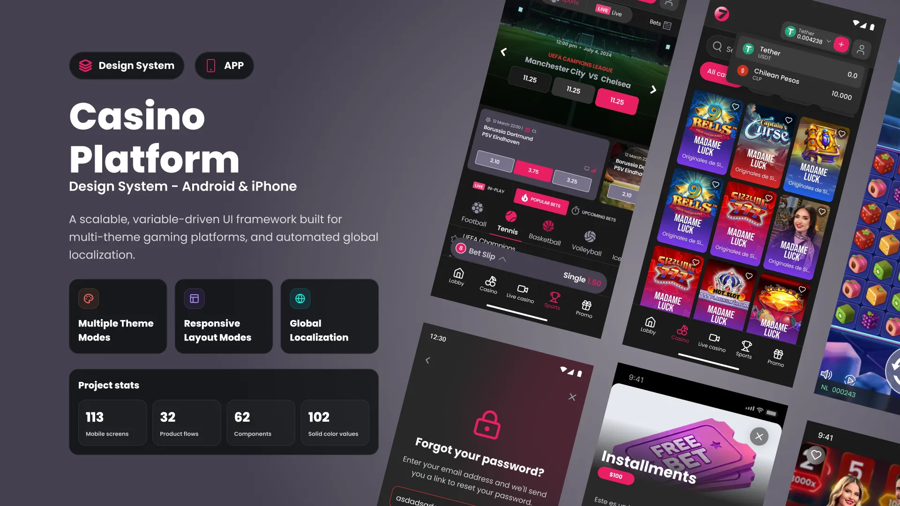

Define the pattern
Design shared product logic, states and behaviour once.
A variable-driven mobile design system that shares product logic while preserving native platform behaviour.

The challenge
Shared casino functions were repeatedly recreated for different brands, markets and mobile platforms. That slowed launches and made existing products harder to maintain.
The goal was one configurable mobile foundation with shared product logic and genuinely native iOS and Android components.
The system
The Mobile App Design System combines common flows, tokens and configuration rules with platform-specific components and interaction patterns.
Ongoing scale
New functionality is designed at system level, then configured for each casino and expressed through the appropriate native iOS or Android component.
Design shared product logic, states and behaviour once.
Apply brand, platform, locale, currency and feature variables.
Deliver the feature through native iOS and Android components.